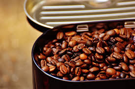
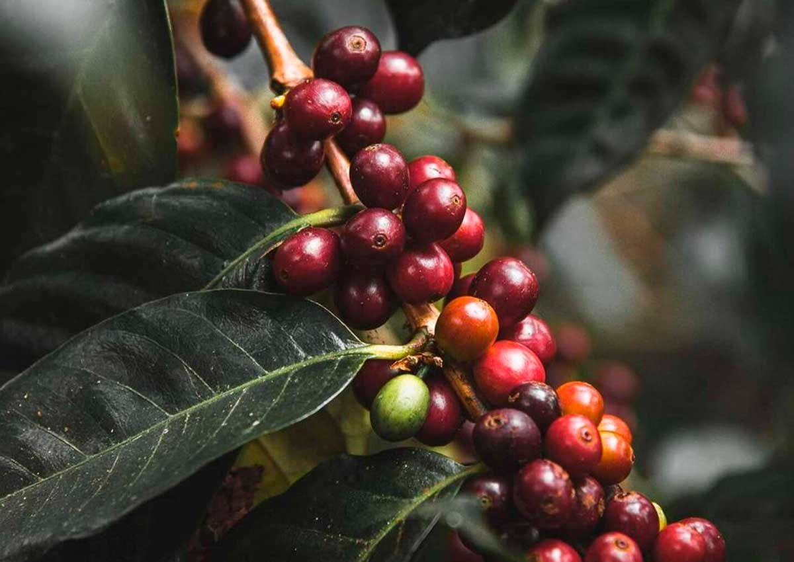
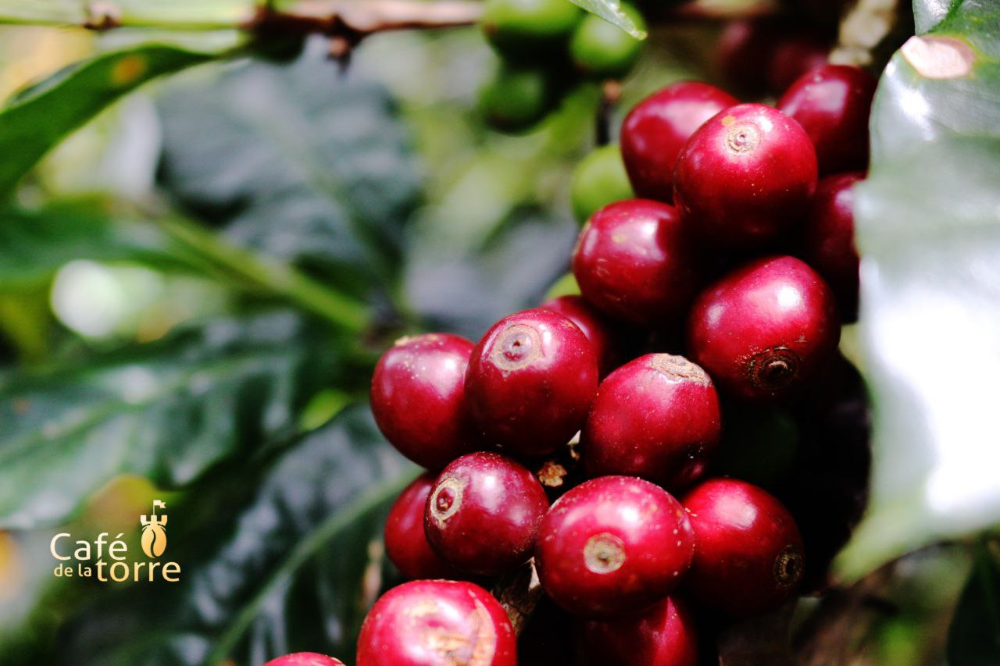

Bourbon
Descubrirás uno de los granos más dulces y equilibrados del café arábica, con una acidez suave y notas que van desde el caramelo hasta la fruta roja.

Descubrirás uno de los granos más dulces y equilibrados del café arábica, con una acidez suave y notas que van desde el caramelo hasta la fruta roja.

Conocerás un grano resistente y versátil, desarrollado en Brasil, que ofrece una taza limpia y consistente con notas achocolatadas y una acidez moderada.

Explorarás uno de los granos más cultivados de América Latina, compacto y productivo, con un perfil fresco, ácido y de fácil expresión en distintos métodos de preparación.